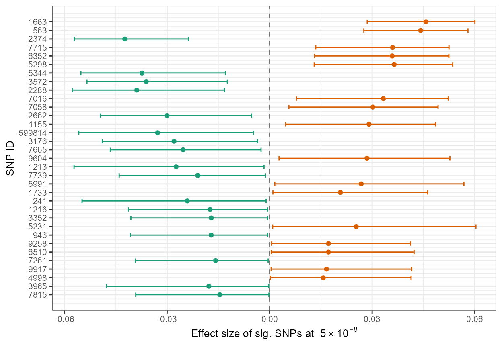

standard_errors_confidence_intervals.RmdThis third vignette briefly illustrates how our R package,
winnerscurse, can be used to generate standard
errors and confidence intervals for certain
adjusted association estimates, obtained using the ‘discovery
only’ Winner’s Curse correction methods. Here, we
demonstrate the functionality of the functions, se_adjust
and cl_interval, using a simulated data set of GWAS summary
statistics and discuss the properties of each function. We create the
same toy data set as that used in the first
vignette:
set.seed(1998)
sim_dataset <- sim_stats(nsnp=10^6,h2=0.4,prop_effect=0.01,nid=50000)
## simulated GWAS summary statistics
summary_stats <- sim_dataset$discThe function se_adjust has three parameters:
summary_data: a data frame in the form as described
previously, with columns rsid, beta and
se
method: the user is required to specify which
‘discovery only’ method they wish to implement in order to
obtain standard errors; "empirical_bayes",
"BR_ss" or "FDR_IQT", which represent the use
of the empirical Bayes method, the bootstrap method, or FDR Inverse
Quantile Transformation, respectively. All three Winner’s Curse
correction methods are detailed in the first
vignette.n_boot: a numerical value which defines the number of
bootstraps to be used, the default option is 100 bootstraps,
n_boot=100. The function requires that this number is
greater than 1.se_adjust outputs a data frame in a similar format
to other functions included in this R package. It includes the
beta estimates obtained after adjustment using the
specified method, method, as well as an additional column
adj_se. This column contains a value which approximates the
standard error of the adjusted association estimate.
se_adjust uses a parametric bootstrap approach.
Firstly, using the inputted data set, n_boot individual
data sets are created as follows. For each bootstrap \(\text{b} = 1, \dots\)n_boot, a
value for \(\hat\beta^{(\text{b})}\) is
generated for each SNP from a normal distribution centred at the naive
\(\hat\beta\) with standard error,
\(\text{se}(\hat\beta)\): \[\hat\beta^{(\text{b})} \sim N(\hat\beta,
\text{se}(\hat\beta)).\]
The specified method, method, is then implemented on
each of the n_boot data sets and so for each SNP, we now
have n_boot adjusted ‘bootstrapped’ \(\hat\beta\) estimates. The standard error
is then easily obtained by applying the function sd to this
set of adjusted estimates for each SNP.
It is important to note that the use of bootstrapping with large
data sets can be quite computationally
intensive. On a personal computer, executing 100
bootstraps can result in se_adjust taking between 1 and 3
minutes to provide an output with a data set such as the one described
here. As expected, BR_ss tends to take the longest of the
three methods.
An example of the implementation of this function for each of the
three methods is given below. For ease of demonstration, a mere 10
bootstraps is used on all occasions. However, a value of
n_boot as small as this is not advised in
practice.
out_EB <- se_adjust(summary_data = summary_stats, method = "empirical_bayes", n_boot=10)
head(out_EB)
#> rsid beta se beta_EB adj_se
#> 1 7815 0.04771727 0.006568299 0.04599530 0.008669139
#> 2 3965 0.04609999 0.006346232 0.04443623 0.008500261
#> 3 4998 -0.04527792 0.006458823 -0.03999539 0.010010348
#> 4 9917 0.04164616 0.006334188 0.03998556 0.004601265
#> 5 7261 0.04162686 0.006343244 0.03996389 0.008016920
#> 6 6510 0.04254046 0.006500057 0.04083638 0.009074620
out_BR_ss <- se_adjust(summary_data = summary_stats, method = "BR_ss", n_boot=10)
head(out_BR_ss)
#> rsid beta se beta_BR_ss adj_se
#> 1 7815 0.04771727 0.006568299 0.03499261 0.006790539
#> 2 3965 0.04609999 0.006346232 0.03380467 0.006879619
#> 3 4998 -0.04527792 0.006458823 -0.03203960 0.002972599
#> 4 9917 0.04164616 0.006334188 0.02836485 0.004280097
#> 5 7261 0.04162686 0.006343244 0.02830782 0.004225297
#> 6 6510 0.04254046 0.006500057 0.02886472 0.004706941
out_FIQT <- se_adjust(summary_data = summary_stats, method = "FDR_IQT", n_boot=10)
head(out_FIQT)
#> rsid beta se beta_FIQT adj_se
#> 1 7815 0.04771727 0.006568299 0.03422825 0.009403474
#> 2 3965 0.04609999 0.006346232 0.03307103 0.007694662
#> 3 4998 -0.04527792 0.006458823 -0.03188772 0.009541773
#> 4 9917 0.04164616 0.006334188 0.02823824 0.007188336
#> 5 7261 0.04162686 0.006343244 0.02827861 0.006387643
#> 6 6510 0.04254046 0.006500057 0.02897770 0.004577303\(\star\) Note: Due to the nature of the conditional likelihood methods, i.e. adjustments are only made to association estimates of SNPs with \(p\)-values less than a chosen significance threshold, it is not possible to obtain standard errors of the conditional likelihood adjusted association estimates in the above manner.
\(\star\) Note:
Currently, this package does not provide a way to create confidence
intervals for adjusted association estimates obtained using the three
methods mentioned above, empirical Bayes, FDR Inverse Quantile
Transformation and bootstrap. However, one option that could be
considered is to take an approach similar to that of
se_adjust and obtain quantiles by means of parametric
bootstrap. Unfortunately, in order to ensure accurate quantiles, this
would require many n_boot simulated data sets to which the
correction method of choice is applied, resulting in a very
computationally intensive process. For this reason, a function that
would generate suitable quantiles for each adjusted association estimate
has been omitted from the R package for now.
The function cl_interval implements the conditional
likelihood methods described in Ghosh
et al. (2008) for each significant SNP and together with
the three adjusted estimates, provides a single confidence interval for
each SNP. As well as a data set in the form of a data frame with columns
rsid, beta and se,
cl_interval requires alpha, a value which
specifies the significance threshold and conf, a value
between 0 and 1 which determines the confidence interval. The default
setting for conf is 0.95.
This confidence interval for the adjusted estimate is specified in Ghosh et al. (2008). With \(\mu = \frac{\beta}{\text{se}(\beta)}\) and \(z = \frac{\hat\beta}{\hat{\text{se}(\hat\beta)}}\), consider the acceptance region \(A(\mu,1-\eta)\), which is defined as the interval between the \(\eta/2\) and \(1-\eta/2\) quantiles of the conditional density, \(p_{\mu}(z | \mid Z \mid > c )\). Having obtained the lower and upper boundaries of this acceptance region, the desired confidence interval is given as: \[(\mu_{\text{lower}}\hat{\text{se}(\hat\beta)}, \mu_{\text{upper}}\hat{\text{se}(\hat\beta)}).\]
In the output of cl_interval, the lower
column holds the values of the lower confidence limit for each SNP while
the upper column contains the upper confidence
limit.
If no SNPs are detected as significant, the function returns a
warning message:
WARNING: There are no significant SNPs at this threshold.
cl_interval can be used in conjunction with the toy
data set as shown below, in which alpha is specified as
5e-8 and a 95% confidence interval is
desired:
out <- cl_interval(summary_data=summary_stats, alpha = 5e-8, conf_level=0.95)
head(out)
#> rsid beta se beta.cl1 beta.cl2 beta.cl3 lower
#> 1 7815 0.04771727 0.006568299 0.04709173 0.04575084 0.04642129 0.02855506
#> 2 3965 0.04609999 0.006346232 0.04549476 0.04419814 0.04484645 0.02758022
#> 3 4998 -0.04527792 0.006458823 -0.04421716 -0.04238468 -0.04330092 -0.05716545
#> 4 9917 0.04164616 0.006334188 0.03909824 0.03598923 0.03754373 0.01349641
#> 5 7261 0.04162686 0.006343244 0.03900942 0.03584977 0.03742959 0.01319315
#> 6 6510 0.04254046 0.006500057 0.03975867 0.03645266 0.03810567 0.01304579
#> upper
#> 1 0.06008004
#> 2 0.05804426
#> 3 -0.02376903
#> 4 0.05248926
#> 5 0.05245207
#> 6 0.05358307\(\star\) Note:
Similar to condlike_rep discussed in the second
vignette, cl_interval also uses the R function
uniroot which generates values for upper and
lower numerically and thus, we advise users to be cautious
of uniroot’s possible failure to obtain appropriate values
in certain circumstances. In practice, this failure has been witnessed
to occur very rarely. However, in order to ensure a greater possibility
that cl_interval will produce appropriate confidence
intervals for each significant SNPs, cl_interval can only
be used with data sets in which the absolute value of the
largest naive \(z\)-statistic
is less than 150.
In the final part of this vignette, we will evaluate and visualise the above obtained confidence intervals. Firstly, we will consider computing the coverage of these confidence intervals for the significant SNPs, i.e. we calculate what percentage of these confidence intervals contain the true association estimate, as shown below.
## Simulated true effect sizes:
true_beta <- sim_dataset$true$true_beta[out$rsid]
## coverage
coverage <- (sum((true_beta > out$lower) & (true_beta < out$upper))/length(true_beta))*100
coverage
#> [1] 96.9697Next, we construct a simple forest plot to illustrate the
adjusted association estimates and corresponding confidence intervals
for each SNP in our simulated data set. Of the three conditional
likelihood adjusted estimates, we include beta.cl2 as the
effect size in our plot.
library(ggplot2)
library(RColorBrewer)
col <- brewer.pal(8,"Dark2")
out$index <- c(33:1)
out$pos <- out$beta > 0
ggplot(data=out, aes(y=index, x=beta.cl2, xmin=lower, xmax=upper, color=pos)) +
geom_point() +
geom_errorbarh(height=.5) +
scale_color_manual(values=c(col[1],col[2])) +
scale_y_continuous(name = "SNP ID", breaks=1:nrow(out), labels=out$rsid) + xlab(expression(paste("Effect size of sig. SNPs at ", 5%*%10^-8))) + theme_bw() + geom_vline(xintercept=0, colour="black",linetype='dashed', alpha=.5) + theme(text = element_text(size=10),legend.position="none") 
\(~\) \(~\)